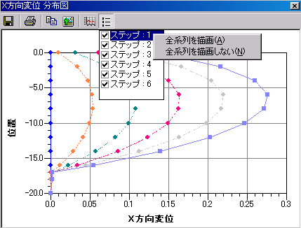

分布図・時系列図では多くの操作は共通です。以下に共通操作の説明を示します。
分布図・時系列図の操作や設定はツールバーのメニューで行います。
メニュー 説明 [CSV形式でファイルに保存] 描画中のグラフのデータをCSV形式でファイルに保存します。 [印刷] 描画中のグラフの印刷を行います。 [テキストコピー] 描画中のグラフのデータをクリップボードにコピーします。 [イメージコピー] 描画中のグラフの図をクリップボードにコピーします。 [グラフスタイル設定] グラフの設定ダイアログボックスを表示し、グラフの設定を行います。 [系列表示設定] 系列の表示・非表示の設定をします。系列表示設定のリストを選択中にマウスの右ボタンをクリックすると下画面のようなコンテキストメニューが表示され、「全系列を描画」もしくは「全系列を描画しない」を選択できます。
[系列表示設定のコンテキストメニュー]
CSVファイルの出力を行うと、以下のような形式でCSVファイルに出力されます。
[分布図]
固定ラベル タイトル X軸ラベル Y軸ラベル 系列-1の凡例 規準軸の値1 規準軸の値2 規準軸の値3 〜 規準軸の値N プロット軸の値1 プロット軸の値2 プロット軸の値3 〜 プロット軸の値N 系列-2の凡例 規準軸の値1 規準軸の値2 規準軸の値3 〜 規準軸の値N プロット軸の値1 プロット軸の値2 プロット軸の値3 〜 プロット軸の値N 系列-3の凡例 規準軸の値1 規準軸の値2 規準軸の値3 〜 規準軸の値N プロット軸の値1 プロット軸の値2 プロット軸の値3 〜 プロット軸の値N
[時系列図]
固定ラベル タイトル X軸ラベル Y軸ラベル 系列-1の凡例 系列-2の凡例 系列-3の凡例 〜 系列-Nの凡例 時間 系列-1の値 系列-2の値 系列-3の値 〜 系列-Nの値 時間 系列-1の値 系列-2の値 系列-3の値 〜 系列-Nの値 時間 系列-1の値 系列-2の値 系列-3の値 〜 系列-Nの値 時間 系列-1の値 系列-2の値 系列-3の値 〜 系列-Nの値